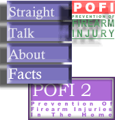

|
Often
times we feel powerless against laws that dictate
terms that violate our basic and inaliable rights.
What
can you personally do to see that bad laws
are no longer enforced or even removed? The power
returns to the people through the trial by jury
system.
Read
up about your responsibility as a juror.
Pre-requisite
beliefs for gun control.
|
Physicians
and public health researchers have long considered
gun violence a public health epidemic -- when
in fact it is not. More people die from medical
errors than from firearms.
Straight
Talk About Facts.
Myths
about Gun Control.
Need
more?
POFI
& POFI
2: Steps to prevent firearm injuries and firearm
injuries in the home.
|
|
What
does the media have to say about gun
control?
Click
on the graphic at the left to read reviews and/or
purchase John Lott's "More Guns, Less Crime"
|
Are the police
legally bound to defend you as an individual?
When
it comes to self-defense, what can you expect
from calling 911?
Safe
gun technology demonstration.
|